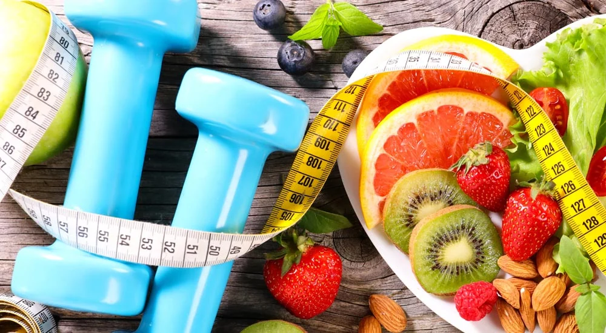

Abnehmen im Sommer: So kannst du deine Fettverbrennung optimieren

Möchtest du wissen, wie Abnehmen im Sommer ganz leicht gelingen kann?
In diesem Artikel erfährst du, wie du mit einfachen, effektiven Strategien deinen Körper unterstützen kannst, überschüssige Kilos effizient abzubauen und deine Fettverbrennung zu optimieren.
Lass dich inspirieren von Ernährungstipps, Empfehlungen für Sport, Training und Muskelaufbau sowie weiteren Tipps, die dir helfen werden, dein Ziel für deine Wunschfigur zu erreichen und dich rundum wohlzufühlen.
Die Bedeutung des Stoffwechsels für das Abnehmen
Der Stoffwechsel spielt eine zentrale Rolle beim Abnehmen und beeinflusst, wie effektiv der Körper Nährstoffe verarbeitet und Fett verbrennt.
Ein gut funktionierender Stoffwechsel ist entscheidend, um überschüssige Kalorien zu verbrennen und das Körpergewicht zu regulieren. Wenn der Stoffwechsel in einem optimalen Zustand ist, kann der Körper effizienter Energie aus der Nahrung gewinnen und diese in Form von Energie nutzen. Dies ist besonders wichtig, wenn es darum geht, eine schlanke Figur zu erhalten und zu behalten.
Was ist der Stoffwechsel?
Der Begriff Stoffwechsel beschreibt, grob gesagt, die Prozesse, die im Körper ablaufen, um Energie und Nährstoffe aus der Nahrung zu gewinnen, zu verarbeiten und zu nutzen. Diese Prozesse sind für alle lebenswichtigen Funktionen notwendig, einschließlich Atmung, Wachstum und Regeneration.
Der Stoffwechsel umfasst zwei Hauptkategorien: den Katabolismus, bei dem Nährstoffe abgebaut werden, um Energie freizusetzen, und den Anabolismus, bei dem der Körper neue Zellen und Gewebe aufbaut. Eine ausgewogene Ernährung unterstützt diese Prozesse und trägt dazu bei, dass der Körper alle notwendigen Nährstoffe erhält.
Wie beeinflusst der Stoffwechsel das Gewicht?
Ein schneller Stoffwechsel kann helfen, überschüssige Kalorien effizienter zu verbrennen und somit das Abnehmen zu unterstützen.
Menschen mit einem hohen Grundumsatz verbrauchen mehr Energie in Ruhe, was bedeutet, dass sie mehr Kalorien verbrennen können, selbst wenn sie sich nicht aktiv bewegen. Dies ist ein Vorteil für alle, die versuchen, ihr Gewicht zu reduzieren oder zu halten.
Darüber hinaus kann ein aktiver Stoffwechsel auch dazu führen, dass wir aktiver und energiegeladener im Alltag sind.
Faktoren, die Stoffwechsel und Fettverbrennung beeinflussen
Verschiedene Faktoren wie Alter, Geschlecht und Lebensstil haben einen direkten Einfluss auf die Stoffwechselrate.
Mit zunehmendem Alter verlangsamt sich oft der Stoffwechsel, was teilweise auf den Verlust von Muskelmasse zurückzuführen ist.
Auch das Geschlecht spielt eine Rolle; Männer haben in der Regel einen höheren Grundumsatz als Frauen, aufgrund eines höheren Anteils an Muskelmasse.
Lebensstilfaktoren wie Ernährung und körperliche Aktivität sind genauso entscheidend: Eine nährstoffreiche Ernährung und regelmäßige Bewegung können den Stoffwechsel ankurbeln und dafür sorgen, dass er effizient arbeitet.
Die Optimierung des Stoffwechsels ist somit ein wichtiger Schritt auf dem Weg zum Abnehmen, und, was noch viel bedeutsamer ist: dass du auch schlank bleibst!
Ernährungstipps zur Optimierung der Fettverbrennung im Sommer
Die richtige Ernährung ist entscheidend, um die Fettverbrennung anzukurbeln.
Mit gezielten Anpassungen in der Ernährung kannst du überschüssige Kalorien effektiv verbrennen. Im Folgenden stellen wir dir einige wichtige Ernährungstipps vor, die dir helfen werden, deine Fettverbrennung im Sommer zu optimieren.
Wasseraufnahme wird oft vernachlässigt
Fürs Abnehmen im Sommer ist eine ausreichende Flüssigkeitszufuhr besonders wichtig, um den Stoffwechsel auf Hochtouren zu halten.
Wasser spielt eine zentrale Rolle in vielen biologischen Prozessen, darunter die Verdauung und der Transport von Nährstoffen. Wenn du genügend Wasser trinkst, unterstützt du nicht nur die Funktion deines Stoffwechsels, sondern hilfst auch deinem Körper, Stoffwechselendprodukte auszuschwemmen.
Besonders an heißen Sommertagen ist es wichtig, regelmäßig kleine Mengen Wasser zu konsumieren, um Dehydration zu vermeiden.
Versuche, täglich mindestens zwei Liter Wasser zu trinken. Du kannst auch auf Kräutertees oder aromatisiertes Wasser zurückgreifen, um die Flüssigkeitsaufnahme interessanter zu gestalten. Nicht geeignet ist Wasser mit Kohlensäure. Wenn es sehr heiß ist und du aktiv bist, kann es nötig sein, noch deutlich größere Mengen zu trinken!
Wasser hilft nicht nur, Nährstoffe zu transportieren und Abfallprodukte auszuscheiden, sondern wirkt auch als natürlicher Appetitzügler.
Viele Menschen verwechseln Durst mit Hunger, was zu überflüssigen Essen führen kann.
Zudem gibt es Hinweise darauf, dass das Trinken von kaltem Wasser den Kalorienverbrauch kurzfristig erhöht, da der Körper Energie aufwenden muss, um das Wasser auf Körpertemperatur zu bringen.
Welches Getränk kurbelt die Fettverbrennung im Sommer an?
Ein hervorragendes Getränk, das den Stoffwechsel ankurbeln kann, ist Wasser mit Zitrone. Es ist nicht nur erfrischend, sondern unterstützt auch die Verdauung und hilft, den Körper zu entgiften. Zudem kann grüner Tee und Ingwerwasser (frischen Ingwer übergießen und ziehen lassen) eine positive Wirkung haben.
Die richtige Zusammenstellung deiner Mahlzeiten
Eine sehr wichtige Strategie, mit der du deine Fettverbrennung optimieren kannst, besteht darin, den Fokus auf die richtige Zusammensetzung deiner Mahlzeiten zu legen.
Dass du beim Abnehmen im Sommer auf weniger Zucker und Getreideprodukte aus Auszugsmehl (Weißmehl) achten solltest, ist dir sicher bekannt. Trotz dieses Wissens ernähren sich die meisten Menschen falsch, wenn sie Fett verbrennen wollen. Nicht selten wird zu wenig, aber dann Brot, Bananen und Nudeln gegessen.
Es ist wichtig, ausreichend zu essen, aber den Schwerpunkt auf eiweißreiche Lebensmittel, Gemüse, Salate und gesunde Fette zu legen.
Die Auswahl von Nahrungsmitteln, die reich an Ballaststoffen und Proteinen sind, kann nicht nur das Sättigungsgefühl erhöhen, sondern auch den Kalorienverbrauch während der Verdauung steigern.
High-Protein-Lebensmittel wie mageres Fleisch, Fisch, Hülsenfrüchte, fettarme Milchprodukte oder pflanzliche Proteinquellen wie Tofu sind besonders wertvoll, da der Körper mehr Energie benötigt, um diese Lebensmittel zu verarbeiten, und sie gleichzeitig günstig auf den Blutzuckerspiegel und Hormone wirken, die für die Fettverbrennung wichtig sind. Zudem brauchen wir sie für den Muskelaufbau- und Erhalt, was für deine Figur und das erfolgreiche Abnehmen bedeutsam ist.
Zusätzlich sind ballaststoffreiche Lebensmittel wie Vollkornprodukte in kleineren Mengen, zuckerarmes Obst sowie Gemüse wichtig, da sie andere wichtige Nährstoffe liefern und die Sättigung erhöhen.
Auch die Integration von gesunden Fetten, wie sie in Avocados, Nüssen oder Olivenöl vorkommen, ist für die Sättigung und den Stoffwechsel wichtig und kann deine Fettverbrennung optimieren.
Eine ausgewogene Zufuhr von Makronährstoffen sorgt für eine stabile Blutzuckerregulation, was Heißhungerattacken vorbeugt. Stelle also jede Mahlzeit aus eiweißreichen Lebensmittel, Gemüsen und Salaten, guten Ölen und nur kleinen Mengen an vollwertigen Kohlenhydraten zusammen. Dann wirst du optimal satt werden und gut abnehmen.
Übrigens: Kennst du unser Programm zum Abnehmen bereits, das wir dir als unabhängige FitLine Berater anbieten? Es umfasst einen konkreten Plan für deine Ernährung, in dem auch auf übersichtlichen Listen erklärt ist, welche Lebensmittel du essen kannst, um ideal abzunehmen. Es ist keine ungesunde Diät, sondern eine sinnvolle und nachhaltige Ernährungsumstellung.
Gerne erklären wir dir unser Programm im Detail, du kannst dich dafür einfach für eine Abnehmberatung an uns wenden.
Reduzierung von Süßem: stelle dein Eis im Sommer selbst her
Der Sommer ist die Zeit von Partys, Urlauben, Grill-Abenden und Eis. Nicht unbedingt die besten Voraussetzungen, um abzunehmen.
Wenn du selbst Partys oder Feiern planst, kannst du darauf achten, dass du gesunde Alternativen zu dickmachenden Kuchen und Desserts anbietest. Dafür findest du online tausende Rezepte.
Und wenn du ein Eis-Liebhaber bist, stelle dir Eis selbst her. Das ist einfacher, als du denkst, wenn du eine Eismaschine hast.
Die Strategie hinter der Herstellung von Eis ohne Zucker basiert auf der Verwendung natürlicher Zutaten und alternativer Süßungsmittel, um die notwendige Süße und Cremigkeit zu erzielen. Hier sind die Hauptpunkte der Rezepte:
- Natürliche Süße: Verwende von Natur aus süße Zutaten wie reife Früchte (z. B. Mangos, besonders gut sind Beeren), die das Eis auf natürliche Weise süßen, ohne zusätzlichen Zucker. Du kannst diese auch zuerst einfrieren, um daraus dann im wenigen Minuten eine Eiscreme zu pürieren.
- Alternative Süßstoffe: Wenn zusätzliche Süße benötigt wird, setze auf alternative Süßungsmittel, allen voran Erythrit, wodurch du keinen negativen Einfluss auf dein Gewicht, deinen Blutzuckerspiegel und die Fettverbrennung hast.
- Cremige Basis: Nutze pflanzliche Milchsorten wie Kokosmilch oder Mandelmilch sowie Zutaten wie Avocado, um die gewünschte Cremigkeit zu erreichen. Super sind auch Nussmuse wie Mandelmus.
- Geschmack durch Gewürze und Aromen: Ergänze das Eis mit Gewürzen (z.B. Vanille, Zimt) und Aromen, die den süßen Geschmack verstärken und das Geschmacksprofil des Eises bereichern.
Nährstoffreiche Lebensmittel
Achte darauf, eine Vielzahl von bunten Obst- und Gemüsesorten sowie Salate in deine Ernährung einzubauen. Diese sind nicht nur reich an Antioxidantien, sondern liefern auch essentielle Nährstoffe, die für einen aktiven Stoffwechsel und Fettverbrennung notwendig sind.
Vollkornprodukte, Hülsenfrüchte, mageres Eiweiß wie Fisch und Geflügel sowie gesunde Fette aus Nüssen und Avocados sind hervorragende Optionen, die du in deine Rezepte integrieren solltest.
Das Geheimnis beim Abnehmen ist, sich zwar satt zu essen, aber Lebensmittel zu nutzen, die wenig Kalorien, jedoch gleichzeitig sehr viele Mikronährstoffe liefern (Vitamine, Mineralien). Man spricht dann von einer hohen Nährstoffdichte. Auch ein hoher Anteil von Protein ist natürlich wichtig.
Dies ist für den Körper optimal, der Stoffwechsel arbeitet super, du bist satt und glücklich und nimmst dabei ab.
Für den Zweck einer hohen Nährstoffdichte möchte ich dir heute noch einen Extra-Tipp mitgeben:
Wildkräuter für erhöhte Sättigung und Nährstoffaufnahme integrieren
Im Frühjahr und frühen Sommer steht dir ein besonderer Geheimtipp aus der Natur zur Verfügung: Wildkräuter.
Hast du die Möglichkeit, Wildkräuter aus der Natur oder deinem Garten zu verwenden? Dann probiere unbedingt aus, sie in deine Rezepte zu integrieren!
Wildkräuter sind extrem reich an essentiellen Nährstoffen, Vitaminen und Mineralien, die in konventionell angebautem Gemüse weniger konzentriert vorhanden sind. Darüber hinaus enthalten viele Wildkräuter Antioxidantien und sekundäre Pflanzenstoffe, die besondere Eigenschaften für den Körper und die Stoffwechselprozesse haben.
Wildkräuter erhöhen die Nährstoffdichte einer Mahlzeit, da sie eine große Menge an notwendigen Nährstoffen im Verhältnis zu ihrer sehr geringen Kalorienanzahl bieten.
Wenn du Wildkräuter in deine Ernährung integriert, führt das also dazu, dass deine Mahlzeiten sättigender werden, da der Körper sehr gut mit wichtigen Nährstoffen versorgt wird. Dadurch wird das Hungergefühl schneller und länger gestillt. Das ist besonders wichtig, wenn du abnehmen möchtest.
Auch der hohe Ballaststoff-Anteil der Wildkräuter fördert zusätzlich das Sättigungsgefühl und dabei hilft, die Kalorienzufuhr zu kontrollieren, ohne auf wichtige Nährstoffe verzichten zu müssen.
Im Sommer gibt es eine Vielzahl von Wildkräutern, die sich hervorragend in die Ernährung integrieren lassen. Hier sind echte Klassiker, die meist auch überall wachsen:
- Brennnessel: Dieses kräftige Kraut ist reich an Vitaminen und Mineralstoffen und kann in Suppen, Quiches, Smoothies und Pestos verwendet werden.
- Giersch: Oft als Unkraut betrachtet, ist Giersch tatsächlich ein nährstoffreiches Kraut. Er kann wie Spinat behandelt werden und eignet sich gut für Salate oder Quiches. Probiere z. B. eine Giersch-Quiche, indem du die Blätter mit Eiern, weiterem Gemüse und fettarmem Käse vermischst und im Ofen bäckst.
- Löwenzahn: Die Blätter sind ideal für Salate und enthalten viele Vitamine. Löwenzahnblätter können zu einem frischen Sommersalat hinzugefügt werden, zusammen mit Tomaten, Gurken und einem leichten Dressing aus Olivenöl und Zitronensaft. Die Bitterstoffe fördern die Verdauung und reduzieren Gelüste auf Süßes!
- Spitzwegerich: Er kann roh in allen möglichen Salaten, gekocht in Suppen oder auch in Quiches und Aufläufen verwendet werden.
Um Wildkräuter in der Ernährung zu verwenden, ist es wichtig, sie gründlich zu waschen und darauf zu achten, dass sie aus einer möglichst unverschmutzten Umgebung stammen. Du kannst kreativ damit umgehen und sie in jeglicher Form in Salate, warme Gerichte und alle möglichen anderen Rezepte integrieren.
Kleine, häufigere Mahlzeiten
Regelmäßige, kleine Mahlzeiten können dazu beitragen, den Stoffwechsel aktiv zu halten, die Insulinempfindlichkeit zu verbessern und Heißhungerattacken zu vermeiden.
Statt nur 2 großer Mahlzeiten am Tag ist es vorteilhaft, 4 kleinere Mahlzeiten über den Tag verteilt zu essen. Dies hält deinen Blutzuckerspiegel stabil und verhindert das Gefühl von Hunger oder Überessen.
Jedoch ist wichtig, dass du den Verdauungsorganen auch genug Zeit zwischen den Mahlzeiten gibst, um das Essen richtig verdauen zu können. Das sollten mindestens 4 Stunden sein.
Das ständige Zwischendurch-Essen ist ein genauso häufiges, fatales Problem beim Abnehmen, wie zu wenig zu essen. Finde deinen Rhythmus und lass nicht Frühstück oder Abendessen weg.
Tipps für Unterwegs, auf Reisen und im Hotel
Im Sommer sind wir meist öfter draußen unterwegs und auf Reisen. Dann ist es wichtig, dass du eine passende und praktische Ernährung planst, sonst greifst du schnell zu falschen Lebensmitteln, die deinen Fettabbau wieder zunichtemachen. Hier sind einige Tipps, die dir dabei helfen:
Setze unterwegs auf eiweißreiche Snacks, die dich satt halten und den Muskelabbau verhindern. Packe leicht transportierbare Optionen ein, wie beispielsweise Proteinriegel oder Trockenfleisch. Auch hartgekochte Eier, selbstgemachte Cracker aus Saaten oder Eiweißbrot sind ideal.
Nüsse wie Erdnüsse, getrocknete Kokoschips und Mandeln sind ebenfalls hervorragend geeignet, weil sie viel Energie und Protein liefern wenn du länger unterwegs bist, und sie nicht gekühlt werden müssen. Ich habe so etwas z. B. immer im Auto dabei, anstatt unterwegs Fastfood von einem Imbiss nutzen zu müssen.
Wenn du Shakes bevorzugst, kannst du Proteinpulver oder auch Shakes zum Abnehmen4 in kleinen Portionsbeuteln oder Bechern mitnehmen und einfach mit Wasser oder Pflanzenmilch mischen.
Vergiss nicht, ausreichend Wasser zu trinken. Das unterstützt sowohl das Abnehmen als auch den Elektrolythaushalt.
Richtig planen im Voraus hilft dir, Snacks vorzubereiten und der Versuchung ungesunder Alternativen zu widerstehen. Du findest online auch viele Rezepte für Snacks für unterwegs.
Wenn du im Hotel bist, kannst du das Frühstücksbuffet bewusst auswählen: Wähle Vollkornprodukte und Proteinquellen wie Eier oder fettarmen Joghurt, um den Tag zu starten, anstatt Bananen, Brötchen, Croissants und Marmelade.
Ich verwende in solchen Fällen zum Frühstück immer fertige Protein-Shakes, die ich mit dabei habe und im Zimmer genieße.
Du kannst auch passende Snacks im Supermarkt kaufen und in der Minibar des Zimmers lagern, um Versuchungen zu vermeiden und immer etwas parat zu haben.
Wenn das Zimmer über Kochmöglichkeiten verfügt, nutze diese, um einfache, gesunde Mahlzeiten zuzubereiten.
Wenn du gern das Restaurant auf Reisen und Urlauben nutzt, hast du immer die Möglichkeit, etwas auszuwählen, was das Abnehmen fördert, anstatt es zu blockieren:
- Salate mit magerem Protein: Entscheide dich für Salate mit gegrilltem Hähnchen, Lachs oder Garnelen. Achte darauf, das Dressing separat zu bestellen, sodass du die Menge kontrollieren kannst.
- Gegrillter Fisch oder Geflügel: Wähle Gerichte, die gegrillten oder gebackenen Fisch wie Lachs oder Hähnchenbrust beinhalten.
- Gemüsegerichte: Entscheide dich für gebratene oder gedünstete Gemüsebeilagen. Sie sind kalorienarm und nährstoffreich. Gemüse-Currys oder Ratatouille sind ebenfalls gute Optionen.
- Suppen auf Brühebasis: Wähle klare Suppen oder solche auf Brühebasis, zum Beispiel Gemüsesuppe oder Hühnersuppe, und vermeide cremige Varianten, die oft reich an Kalorien sind.
- Sashimi und Sushi: Entscheide dich für Sashimi, oder Sushi-Rollen ohne Mayonnaise und mit Gemüsefüllung. Sashimi bietet mageres Protein ohne zusätzliche Kohlenhydrate.
- Omeletts oder Eierspeisen: Zum Frühstück sind Omeletts mit Gemüse und wenig Käse eine gute Wahl. Sie bieten dir eine sättigende Portion Eiweiß, die dich gut in den Tag starten lässt.
- Tacos mit magerem Fleisch: Wähle Tacos mit magerem Fleisch wie Hühnchen oder Tofu und fülle diese mit reichlich Gemüse, um sie gesünder zu gestalten.
Fettverbrennung optimieren: weitere wichtige Faktoren
Viel Schlafen
Ein wichtiger Faktor, mit der du deine Fettverbrennung optimieren und beeinflussen kannst, und der dir somit beim Abnehmen im Sommer hilft, ist der Schlaf.
Eine ausreichende Erholung und eine gute Schlafqualität sind entscheidend für die Regeneration des Körpers und die Regulierung von Hormonen, die für den Metabolismus wichtig sind. Während des Schlafs durchläuft der Körper verschiedene Erholungsphasen, in denen er sich erneuert und an über den Tag angesammelte Stressfaktoren anpasst.
Studien haben gezeigt, dass Menschen, die nicht genügend schlafen, ein höheres Risiko für Übergewicht oder Fettleibigkeit haben, da unausgeschlafene Personen oft zu ungesunden Essgewohnheiten neigen und weniger motiviert sind, sich zu bewegen. Und, weil bestimmte Hormone ungünstig beeinflusst werden, die Appetit, Hunger und Stoffwechsel steuern.
Bei Schlafmangel kann es zu einem Ungleichgewicht kommen, das das Verlangen nach ungesunden Nahrungsmitteln steigert und die Fähigkeit des Körpers beeinträchtigt, Fett zu verbrennen. Studien zeigen, dass Menschen mit regelmäßig ausreichend Schlaf leichter ein gutes Gewicht halten oder abnehmen können.
Um die Qualität deines Schlafes zu verbessern, solltest du versuchen, einen regelmäßigen Schlafrhythmus einzuhalten und dabei elektronische Geräte mindestens eine Stunde vor dem Zubettgehen beiseite zu legen.
Zudem können kleine Rituale wie das Lesen eines Buches oder das Hören beruhigender Musik helfen, den Körper auf das Einschlafen vorzubereiten.
Eine ideale Schlafumgebung kann erheblich zu einem guten Schlaf beitragen. Um sie zu optimieren, sollten Faktoren wie Licht, Geräuschpegel und Temperatur berücksichtigt werden. Das Schlafzimmer sollte dunkel, ruhig und kühl sein, um eine angenehme Atmosphäre zum Entspannen zu schaffen.
Im Sommer sind die Nächte kurz und öfter warm. Dunkle deine Fenster gut ab (z. B. mit dichten Jalousien), damit der Schlaf nicht durch das Licht bereits morgens um 4 oder 5 Uhr gestört wird. Oder nutze Schlafmasken für die Augen.
Sorge für Kühlung in deinem Schlafzimmer und tagsüber für möglichst wenig Aufwärmung, z. B. durch geschlossene Fenster und Fensterläden. Das wird deinen Schlaf sehr beeinflussen.
Stress ruiniert deine Fettverbrennung
In einer schnelllebigen Welt sind Stressoren allgegenwärtig und können erhebliche Auswirkungen auf den Metabolismus und die Fettverbrennung haben.
Stress führt zur Ausschüttung von Cortisol, einem Hormon, das den Abbau von Fett hemmt. Stresshormone können den Appetit steigern und zu Heißhungerattacken führen, insbesondere auf zuckerhaltige oder fettreiche Nahrungsmittel. Ein dauerhaft erhöhter Cortisolspiegel kann die Fettablagerung im Bauchbereich begünstigen und das Abnehmen erschweren.
Um dem entgegenzuwirken, ist es wichtig, geeignete Strategien zur Stressreduktion in deinen Alltag zu integrieren. Techniken wie Atemübungen, Meditation oder geführte Entspannungsprogramme können helfen, den Geist zu beruhigen und die körperliche Anspannung abzubauen.
Darüber hinaus kann das Einführen von regelmäßigen Auszeiten in dein Leben von großem Nutzen sein. Ob es sich um kurze Pausen während der Arbeit handelt oder um geplante Wochenendausflüge.
Bewegung als Schlüssel zur Fettverbrennung im Sommer
Regelmäßiger Sport ist ein effektives Mittel, um die Fettverbrennung zu steigern und das Abnehmen zu unterstützen.
Bewegung steigert die Muskelmasse, und Muskeln verbrennen mehr Kalorien im Ruhezustand als Fettgewebe. Daher ist es wichtig, ein effektives Trainingsprogramm in deinen Alltag einzubauen, das sowohl Kraft- als auch Ausdauerübungen umfasst.
High-Intensity-Interval-Training (HIIT) hat sich als besonders wirkungsvoll erwiesen, um die Fettverbrennung anzukurbeln und in kurzer Zeit erhebliche Kalorien zu verbrennen. Durch die wechselnde Intensität der Übungen wird der Körper gefordert und der Nachbrenneffekt gefördert, was bedeutet, dass du noch Stunden nach dem Training Kalorien verbrennst.
Denke daran, dass auch Aktivitäten wie Yoga oder Pilates oder auch Tanzen nicht nur deinem Geist guttun, sondern auch den Körper stärken, flexibler machen und Fett verbrennen können.
Krafttraining
Krafttraining führt zu Muskelaufbau, und damit auch zu einem erhöhten Grundumsatz. Das ist wichtig für deine Fettverbrennung und das Abnehmen im Sommer.
Wenn du regelmäßig Gewichte hebst oder Körpergewichtsübungen machst, förderst du den Aufbau von Muskeln. Muskeln verbrennen mehr Kalorien als Fettgewebe, selbst im Ruhezustand. Das bedeutet, dass du mit einem höheren Muskelanteil in deinem Körper auch mehr Kalorien und Fett verbrennst, selbst wenn du einfach nur sitzt oder liegst.
Es ist empfehlenswert, mindestens zwei bis drei Mal pro Woche Krafttraining in deinen Alltag zu integrieren und so gezielt Muskeln aufzubauen. Du kannst mit einfachen Übungen wie Kniebeugen und Liegestützen beginnen, es braucht nicht das Training im Fitness-Studio oder extremen Sport.
Diese Übungen kannst du im Sommer super auch draußen in der Natur, im Garten, auf deinem Balkon oder der Terrasse machen!
Ausdauertraining
Ausdauersportarten wie Laufen oder Radfahren sind effektiv, um Fett zu verbrennen und die allgemeine Fitness zu verbessern, sie führen weniger zu Muskelaufbau. Durch gezielte Ausdaueraktivitäten wird das Herz-Kreislauf-System gestärkt und die Sauerstoffaufnahme erhöht.
Es wird empfohlen, mindestens 150 Minuten moderate aerobe Aktivität pro Woche Training anzustreben. Du kannst dies erreichen, indem du beispielsweise täglich 30 Minuten joggen gehst oder Rad fährst. Im Sommer ist dies einfacher als zu jeder anderen Jahreszeit und kann viel Spaß machen.
Intervalltraining
Eine besonders effektive Methode, mit der du deine Fettverbrennung optimieren kannst, ist das Intervalltraining. Dabei wechselst du zwischen intensiven Belastungsphasen und Erholungsphasen. Diese Trainingsform hat den Vorteil, dass sie nicht nur während des Trainings Kalorien verbrennt, sondern auch nach dem Training einen Nachbrenneffekt erzeugt. Das bedeutet, dass dein Körper auch nach dem Workout weiterhin Kalorien und Fett verbrennt, während er sich erholt.
Du könntest beispielsweise beim Laufen kurze Sprints einbauen oder beim Radfahren zwischen schnellen und langsamen Phasen wechseln. Intervalltraining kann in verschiedenen Sportarten angewendet werden und ist eine hervorragende Möglichkeit, schnell Fortschritte zu erzielen.
Alltag aktiv gestalten
Eine weitere Möglichkeit besteht darin, deinen Alltag aktiver zu gestalten. Kleine Änderungen können einen großen Unterschied machen:
Nutze die Treppe anstelle des Aufzugs, gehe kurze Strecken zu Fuß oder mache Spaziergänge in der Mittagspause. Auch im Homeoffice kannst du regelmäßige Bewegungseinheiten einbauen: stehe auf, dehne dich oder mache kurze Übungen zwischen den Arbeitseinheiten für den Muskelaufbau. Diese kleinen Aktivitäten summieren sich im Laufe des Tages und tragen dazu bei, Fett zu verbrennen.
Wichtige Nährstoffe im Sommer
Nahrungsergänzungsmittel können gezielt eingesetzt werden, um deine Ernährung zu ergänzen und deinem Körper die notwendigen Nährstoffe bereitzustellen, die du möglicherweise nicht ausreichend über die normale Kost aufnimmst.
Besonders in stressigen Zeiten oder bei besonderen diätetischen Anforderungen kann es eine Herausforderung sein, alle Vitamine und Mineralien adäquat zu erhalten.
Zu den häufig verwendeten Ergänzungen zählen beispielsweise Whey Eiweißpulver bzw. Produkte mit viel Protein, Omega-3-Fettsäuren und bestimmte Vitamine wie B-Vitamine, die für den Energiestoffwechsel1 essenziell sind.
Im Sommer schwitzen wir mehr und sind aktiver. Aktive Urlaube mit Wanderungen, Schwimmen oder anderen sportlichen Aktivitäten haben einen erhöhten Nährstoffverbrauch zur Folge, besonders, wenn es dann noch sehr warm ist.
Einige der wichtigsten Mikronährstoffe, auf die du besonders achten solltest, sind Magnesium und weitere Elektrolyte. Die sommerliche Hitze erhöht den Bedarf an Magnesium und Elektrolyten, da sie durch Schwitzen schneller verloren gehen.
Wir als unabhängige Vertriebspartner der PM International / FitLine Produkte bieten eine hervorragende Möglichkeit zur Nährstoffoptimierung für diese Zwecke an und helfen dir gern bei der richtigen Auswahl. Perfekt dafür wäre z. B. unser Mineraliengetränk Resto, der Fitness-Drink oder auch unsere beliebte Mischung mit B-Vitaminen Acti.
Bestimmte Mikronährstoffe spielen auch eine entscheidende Rolle bei der Energieproduktion1 und dem Stoffwechsel- und Fettstoffwechsel2. Chrom3, Zink2 und verschiedene B-Vitamine1 einige Beispiele.
3Chrom trägt zur Aufrechterhaltung eines normalen Blutzuckerspiegels bei. Chrom trägt zu einem normalen Stoffwechsel von Makronährstoffen bei. 1Thiamin, Riboflavin, Biotin, Niacin und Pantothensäure tragen zu einem normalen Energiestoffwechsel bei. 2Zink trägt zu einem normalen Kohlenhydrat-Stoffwechsel bei. Zink trägt zu einem normalen Stoffwechsel von Makronährstoffen bei. Zink trägt zu einem normalen Fettsäurestoffwechsel bei. 4Das Ersetzen von zwei der täglichen Hauptmahlzeiten im Rahmen einer kalorienarmen Ernährung durch einen solchen Mahlzeitersatz trägt zu Gewichtsabnahme bei.
Motivation und Mindset für erfolgreiches Abnehmen
Ein positives Mindset ist entscheidend für nachhaltigen Erfolg beim Abnehmen. Denn was nützen all die Tipps, wenn dir nachher das Durchhaltevermögen fehlt und du bei den ersten Herausforderungen aufgibst…
Die innere Einstellung beeinflusst, wie du Herausforderungen wahrnimmst und wie du mit Rückschlägen umgehst. Ein starkes, motiviertes Denken kann dir helfen, deine Ziele klar zu definieren und diese konsequent zu verfolgen.
Wenn du dich auf den Prozess des Abnehmens konzentrierst, anstatt nur auf das Endziel, wird es einfacher, die täglichen Herausforderungen zu meistern.
Ziele setzen und verfolgen
Das Setzen realistischer Ziele ist sehr wichtig. Einer der häufigsten Fehler beim Abnehmen ist es, dass zu viel Gewichtsverlust in kurzer Zeit erwartet wird. Dass man z. B. eine Diät macht, mit der man ohne Rücksicht auf Verluste schnell abnehmen kann.
Beginne damit, spezifische, messbare und erreichbare Ziele zu formulieren, die sich auf deine Ernährung und Bewegung beziehen. Anstatt dich nur auf die Zahl auf der Waage und eine Diät zu konzentrieren, könntest du dir auch Ziele setzen wie „Ich möchte dreimal pro Woche 30 Minuten Sport treiben“ oder „Ich werde jeden Tag zwei Liter Wasser trinken“.
Diese Art von Zielen gibt dir eine klare Richtung und ermöglicht es dir, Fortschritte zu erkennen. Halte deine Ziele schriftlich fest und überprüfe regelmäßig deine Fortschritte. Dies schafft ein Gefühl der Verantwortung und hilft dir, motiviert zu bleiben.
Unterstützung durch Gemeinschaft
Gemeinschaftliche Unterstützung kann motivierend wirken und den Weg zum Ziel erleichtern. Suche nach Gleichgesinnten, sei es in Form von Freunden, Familienmitgliedern oder Online-Communitys, die ähnliche Ziele verfolgen.
Wenn du das Gefühl hast, Teil einer Gemeinschaft zu sein, in der jeder an denselben Herausforderungen arbeitet, wird es einfacher, durchzuhalten und sich gegenseitig zu unterstützen. Überlege auch, ob du an Gruppenaktivitäten oder Kursen teilnehmen möchtest. Das kann nicht nur deine Motivation steigern, sondern auch Spaß machen.
Ein weiterer Vorteil einer unterstützenden Gemeinschaft ist die Möglichkeit des Erfahrungsaustauschs. Wenn jemand in der Gruppe einen Rückschlag erlebt hat und diesen überwunden hat, kann dies anderen helfen zu erkennen, dass Schwierigkeiten normal und Teil des Prozesses sind. Das Teilen von Erfolgen und Misserfolgen fördert ein Gefühl der Zusammengehörigkeit und ermutigt alle Beteiligten dazu, ihre Ziele weiterhin aktiv zu verfolgen.